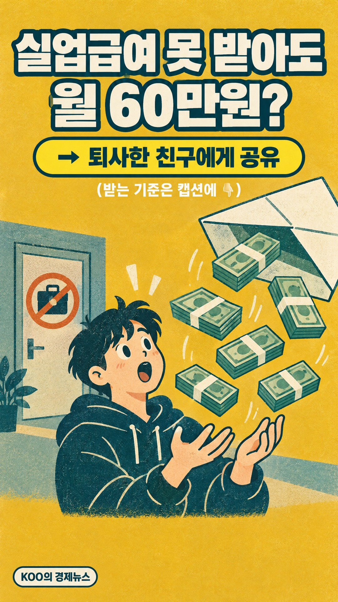
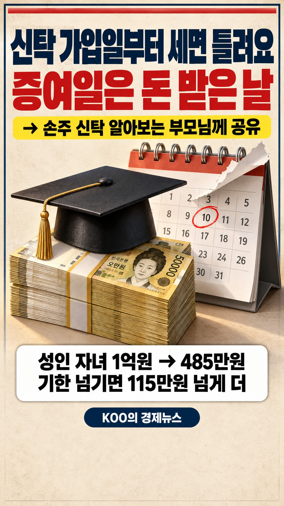
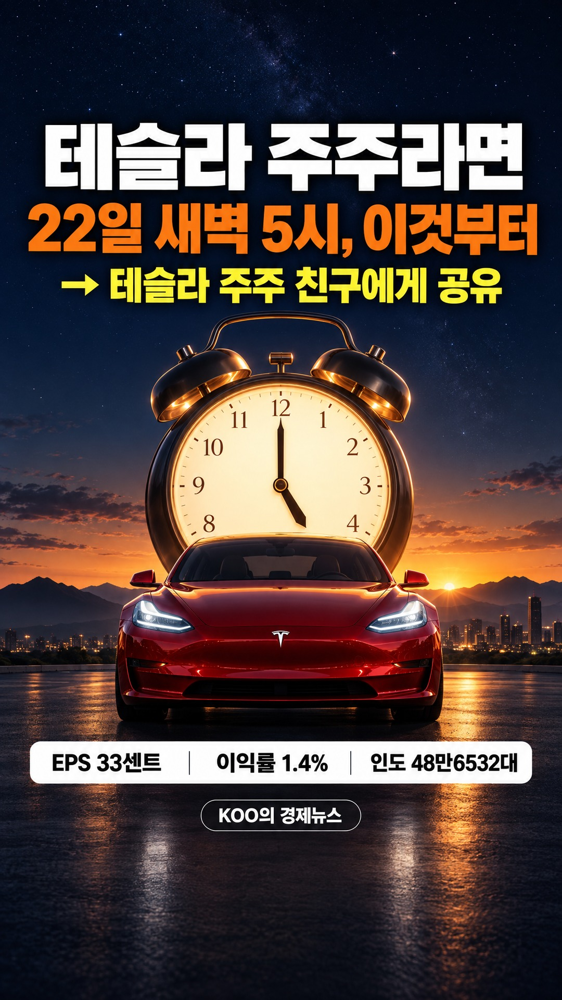
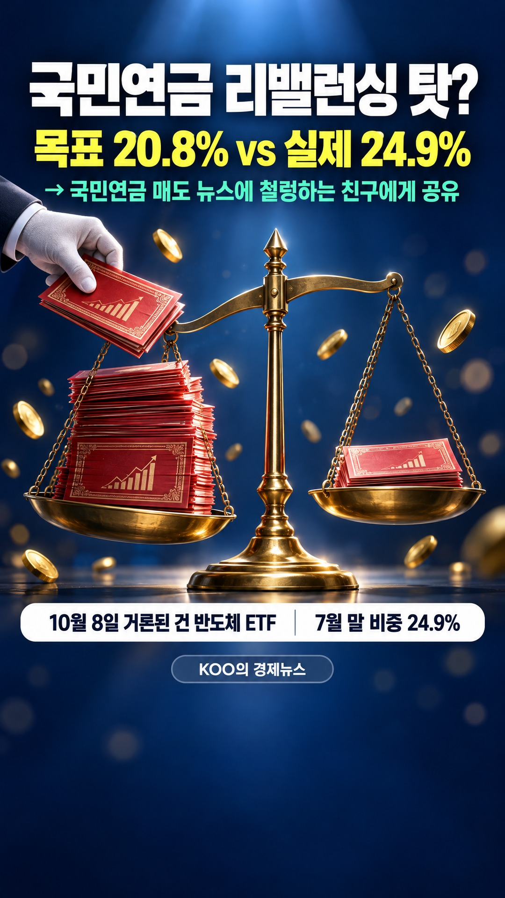
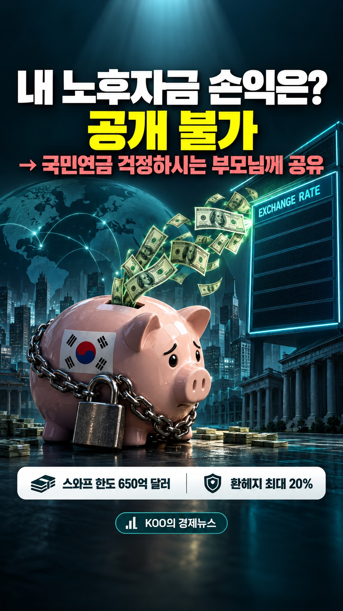
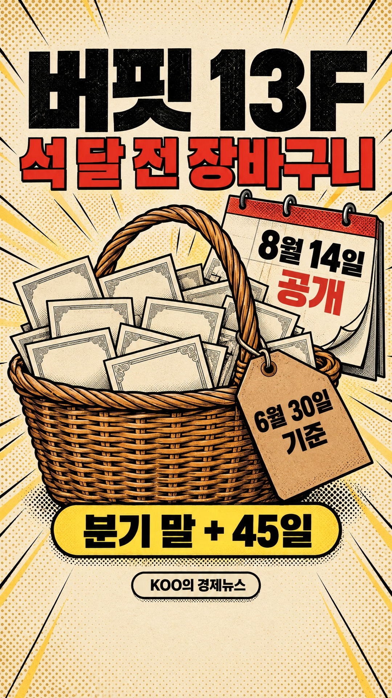
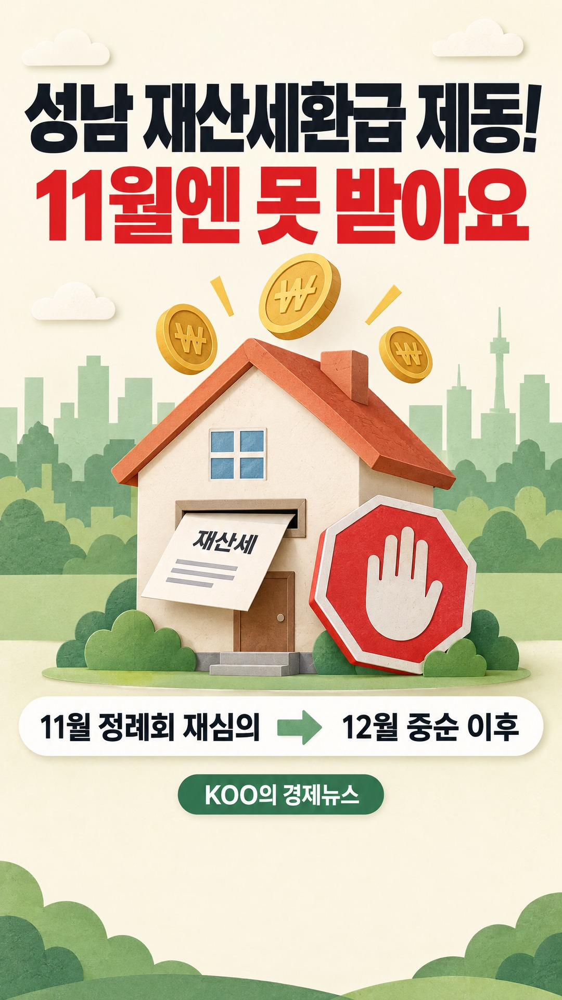
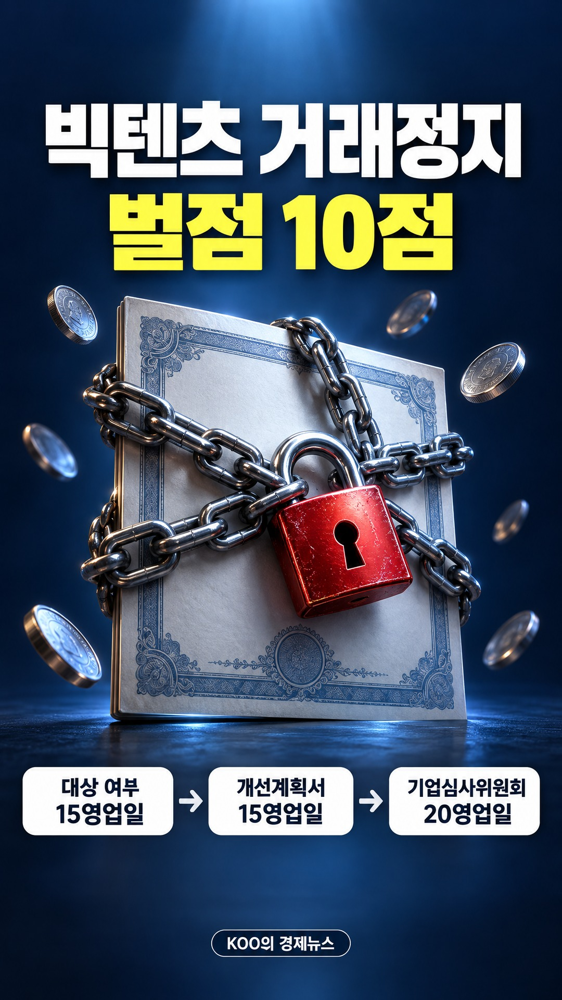
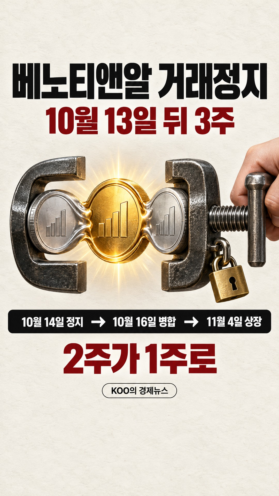

릴스 올리기
- 이미지 저장(또는 영상 저장)을 누릅니다
- 인스타 앱 + → 릴스 → 저장한 그림이나 영상을 고릅니다
- 음악에서 트렌드 곡을 고릅니다(소리가 없습니다)
- 캡션 복사 후 붙여 넣고 공유합니다
10월 10일올릴 차례
실업급여 안 나온다면, 국민취업지원제도 360만원부터

그림을 길게 눌러 사진 앱에 저장해도 됩니다.
10월 10일올림 ✓
증여세신고기한, 조건부 신탁은 가입일부터 세면 틀려요

그림을 길게 눌러 사진 앱에 저장해도 됩니다.
10월 10일올림 ✓
테슬라 주주라면 22일 새벽 5시, 이것부터 보세요

그림을 길게 눌러 사진 앱에 저장해도 됩니다.
10월 10일올림 ✓
주담대 4억 되면? 생애최초는 6억 집도 깎여요
그림을 길게 눌러 사진 앱에 저장해도 됩니다.
10월 9일올림 ✓
국민연금 리밸런싱 탓? 코스피 급락에 숨은 다른 리밸런싱

그림을 길게 눌러 사진 앱에 저장해도 됩니다.
10월 9일올림 ✓
국민연금 외환스와프, 내 노후자금 손익은 '공개 불가'

그림을 길게 눌러 사진 앱에 저장해도 됩니다.
10월 9일올림 ✓
버핏 13F, 지금 보는 건 석 달 전 장바구니예요

그림을 길게 눌러 사진 앱에 저장해도 됩니다.
10월 9일올림 ✓
성남 재산세환급 제동! 1주택자 11월엔 못 받아요

그림을 길게 눌러 사진 앱에 저장해도 됩니다.
10월 9일올림 ✓
에쎈테크 거래정지 비상! 100주가 20주 됩니다
그림을 길게 눌러 사진 앱에 저장해도 됩니다.
10월 9일올림 ✓
[빅텐츠 주주 필독] 벌점 10점 거래정지, 몇 달 묶이나

그림을 길게 눌러 사진 앱에 저장해도 됩니다.
10월 8일올림 ✓
베노티앤알 거래정지, 10월 13일 뒤 3주 못 팔아요

그림을 길게 눌러 사진 앱에 저장해도 됩니다.
10월 8일올림 ✓
이렘 유상증자 1,060원, 청약 전 볼 세 가지
10월 8일올림 ✓
환율 1250원 vs 1400원, 갈리는 전제 세 가지
10월 8일올릴 차례
리튬포어스 유상증자 48만주, 기존 주주 청약은 없어요
10월 8일올릴 차례
에이프로젠바이오로직스 시총 300억, 남은 건 5거래일
10월 8일올림 ✓
위안화 환율 2%, 중국 송금 전 볼 숫자 세 가지
10월 8일올림 ✓
IRP 계좌 개설, '수수료 0원'에서 볼 세 가지
10월 8일올림 ✓
고용촉진장려금, 채용보다 구직등록이 먼저예요
10월 8일올림 ✓
토스뱅크 송금 오류 30분, 더 들어온 돈은 취소 대상